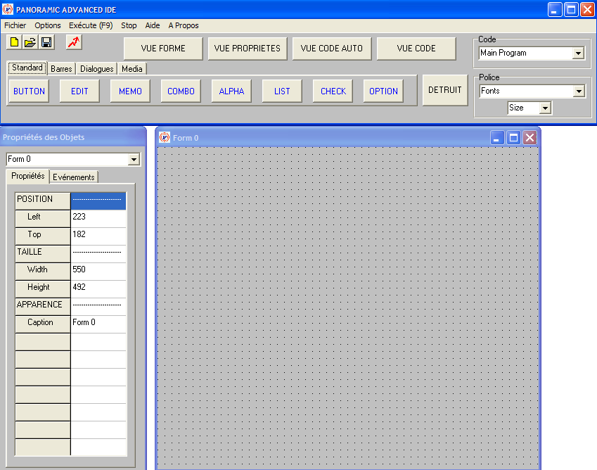
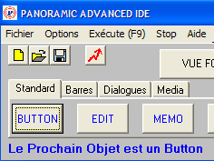
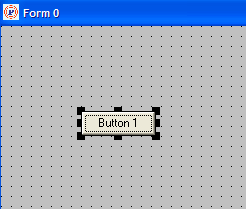
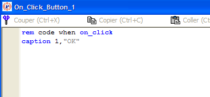
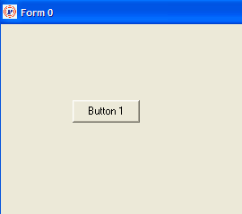
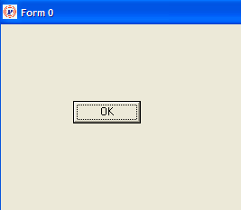

PANORAMIC : PRISE EN MAIN DE L'IDE
A QUOI SERT PANORAMIC_IDE ?
IDE veut dire "Integrated Development Environment" c'est à dire en bon français : "Environnement de Développement Intégré", soit EDI en abrégé.
PANORAMIC_IDE sert à créer l'interface graphique de votre application, à taper et à modifier votre code source, à l'exécuter et à créer un exécutable.
PANORAMIC_IDE vous permet de placer et de redimensionner avec la souris les objets directement sur votre feuille (FORM) et que vous trouvez dans le bandeau. Vous créer ainsi directement votre interface utilisateur, telle qu'elle sera à l'exécution.
Pour cela, vous cliquez dans le bandeau sur l'objet que vous avez choisi (par exemple BUTTON), puis vous cliquez sur votre FORM : un objet BUTTON se crée à l'endroit que vous avez choisi.
Ensuite, par un "Glisser-Déposer", vous le mettez là où vous voulez, si toutefois vous voulez le mettre ailleurs. La même technique du "Glisser-Déposer" sur les 8 poignées qui entourent ce bouton permettent de le redimensionner. Toutes les modifications que vous effectuez se retrouvent dans l'inspecteur d'objet.
L'inspecteur d'objet est une sorte de rappel des propriétés d'un objet, mais toute modification que vous ferez dans cet inspecteur d'objet s'effectueront sur l'objet lui-même. Ainsi vous pouvez déplacer un objet à la souris pour le mettre là ou vous voulez sur la feuille, ou vous modifiez ses propriétés top et left dans l'inspecteur d'objets, le résultat est identique.
Vous pouvez taper votre code principal dans la fenêtre appropriée.
Pour taper du code correspondant aux événements d'un objet, faites un clic gauche sur cet objet. Si l'objet accepte plusieurs types d'événements, cocher l'événement choisi dans la fenêtre (ON_CLICK ou ON_CHANGE).
Vous pouvez essayer votre code directement (RUN, ou F9 ou click sur l'icone éclair) ou compiler votre application.
Une fonction de transfert du source vers PANORAMIC_EDITOR est prévue.
ECRITURE D'UN PETIT PROGRAMME
Pour mettre tout cela en pratique et se faire la main, nous allons écrire un tout petit programme (1 seule ligne) qui visualise une fenêtre avec un bouton. Lorsqu'on clique sur ce bouton, il affiche OK.
1 - On lance PANORAMIC_IDE.
On obtient 3 fenêtres.
Le détail sera pour plus tard.
Pour le moment, sachez que la fenêtre du haut permet de choisir les objets
que nous allons disposer sur la fenêtre en bas à droite. Cette
fenêtre, en bas à droite, est notre espace de travail : tous les
objets que nous allons y déposer seront utilisables dans notre programme.
Cette fenêtre est un objet de type Form, elle a automatiquement le numéro
0, c'est pourquoi elle est appelée Form 0.
Cette fenêtre
est bien sûr déplaçable à la souris et redimensionnable.
De même, les objets qu'on y dépose sont déplaçables
à la souris et redimensionnables grace à des poignées de
redimensionnement.

2 - Dans la fenêtre PANORAMIC ADVANCED IDE, on choisit un objet Bouton : on clique sur BUTTON de l'onglet Standard. D'ailleurs, il s'affiche "Le Prochain Objet est un Button":

3 - Sur la fenêtre de travail, on clique à un endroit, et un bouton apparait à ce même endroit. Si on clique alors sur le bouton, des petits carrés noirs apparaissent : ce sont les poignées de redimensionnement dont je parlais tout à l'heure.

4 - On fait un click DROIT sur ce bouton. Une fenêtre apparaît. Dans cette fenêtre, on va décrire ce qui se passera lorsque, plus tard, à l'exécution du programme on cliquera sur le bouton.
Dans cette fenêtre
on tape la seule ligne qui composera le source de notre programme : caption 1,"OK"
Signification
de cette ligne : on affecte le libellé "OK" au bouton numéro
1.
En effet, le bouton est l'objet numéro 1 (chaque objet a son numéro).
Pour affecter un libellé à un objet, la commande est CAPTION.
Pour faire agir une commande sur un objet, on indique le numéro de l'objet
(1 ici).
Par conséquent, lorsqu'on cliquera sur le bouton, le bouton affichera "OK". Ce n'est pas plus compliqué que cela.

5 - Ca y est, le programme est terminé. On va l'exécuter.
EXECUTION DU PETIT PROGRAMME
Pour l'exécuter on a 3 possibilités, toutes équivalentes :
on appuye sur la touche F9,
ou on clique sur l'icône qui visualise un petit éclair,
ou on clique sur Execute du menu.
La fenêtre principale apparait :

Quand on clique sur ce bouton, il affiche OK :
